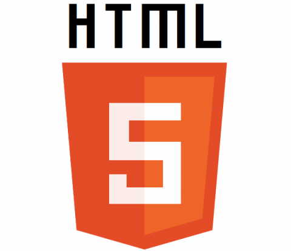
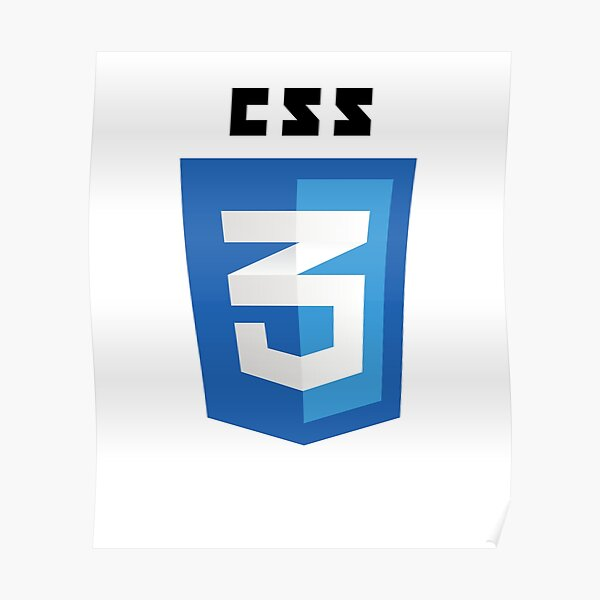
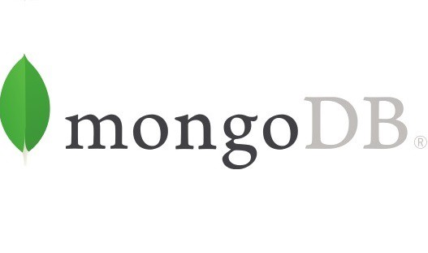
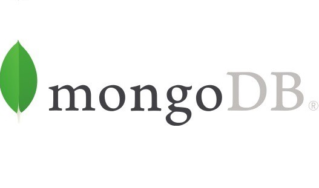
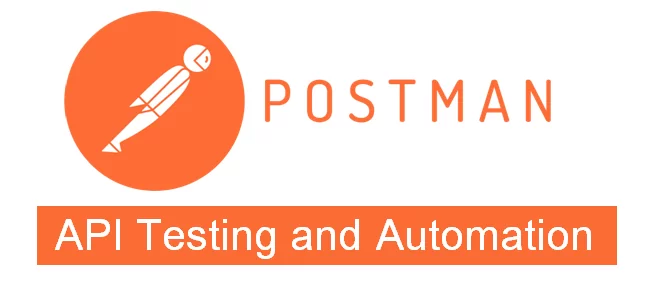
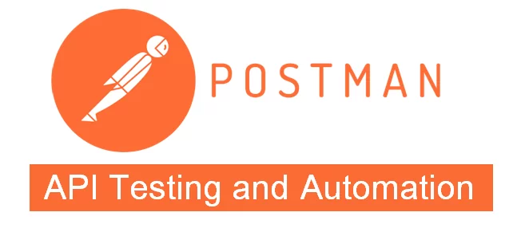
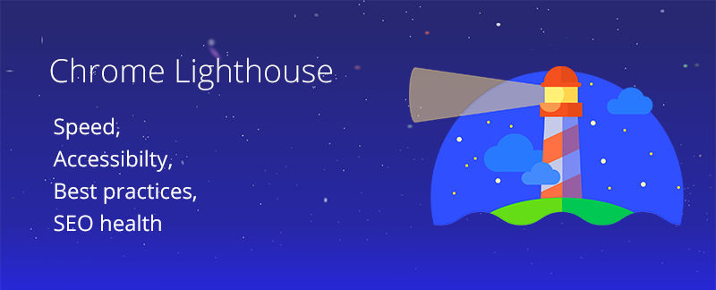

B e n j a m i n D u c a u
H e l l o ! I' m
Qui suis-je ?
Après une carrière dans le commerce principalement axée dans le milieu de la téléphonie, j'ai décidé de changer de voie et de me reconvertir dans un domaine qui me permettrait de m'épanouir : le développement web.
Fraîchement diplômé de ma formation de Développeur Web où j'ai pu réaliser certains projets et voir le métier dans son ensemble, je souhaite aujourd'hui intégrer une équipe, essentiellement en full remote. Même si j'ai un léger penchant pour le côté front-end, j'aime tout autant cet aspect full-stack où je peux intervenir sur l'ensemble d'un projet. Vous trouverez l'ensemble de mes réalisations ci-après.
Mes projets réalisés
-
Oh My Food
À partir de maquettes mobiles, création de la page d'accueuil OhMyFood et de cartes de restaurants avec des animations, le tout entièrement responsive.
Les technos utilisées :
 
-
So Pekocko
La partie front-end ayant déjà créée auparavant, j'ai été chargé de la partie back-end : création d'une API sécurisée et d'une base de donnée MongoDB Atlas.
Les technos utilisées :

 

 

-
La Chouette Agence
Réalisation d'un audit SEO du site La Chouette Agence et création d'un rapport en tenant compte des contraintes d'accessibilité. Optimisation et refonte du code en y apportant 10 améloriations issues du rapport et ce ne modifiant uniquement que les parties HTML et CSS.
Les technos utilisées :


 Pour le projet avant modification :
Pour le projet avant modification :
Pour le projet Après modification :
-
Groupomania
Réalisation from scratch d'un réseau social interne d'entreprise pour la société Groupomania suivant un cahier des charges prédéfini : Base de données sous MySQL Serveur sous NodeJs / Express Front-end en JS avec liberté d'utilisation d'un framwork ou non Possibilité de partager des articles et/ou des images, ainsi que de les commenter Mise en place d'un système de modération
Les technos utilisées :


-
Orinoco
Réalisation de la partie front-end du site e-commerce Orinoco en Javascript Vanilla, la partie back-end ayant déjà été créée et fournie.
Les technos utilisées :

-
Reservia
À partir de deux maquettes, l'une en version desktop et l'autre en version mobile, création d'une page web entièrement responsive du site Réservia.
Les technos utilisées :